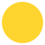

Tijdens mijn stage bij Satori kreeg ik de opdracht om een posterreeks van drie posters te ontwerpen voor het bedrijf zelf. De posters moesten volledig aansluiten bij de branding van Satori.
De naam Satori komt uit het Japans en betekent “verlichting” of het moment van inzicht waarin men de ware aard van de werkelijkheid ervaart. Dit concept vormt de kern van het merk en was een belangrijke leidraad tijdens het ontwerpproces. Omdat Satori staat voor een ervaring die moeilijk in woorden uit te drukken is, wilde ik dit gevoel visueel vertalen door middel van symboliek en eenvoud.
De posters zijn ontworpen met een beperkt kleurenpalet van twee kleuren: Een donker grijs/zwart en een zachte beige tint.
Dit zijn de hoofdkleuren van Satori en zorgen voor een rustige, tijdloze en minimalistische uitstraling. Door het beperkte kleurgebruik ligt de focus volledig op vorm, compositie en betekenis.
In de eerste schetsfase werkte ik vooral met klassieke Japanse elementen, zoals tempels en lotusbomen. Gaandeweg ben ik ook andere richtingen gaan verkennen, waaronder het gebruik van dieren als symbolische dragers van betekenis. Na overleg besloten we deze richting verder uit te werken. Uiteindelijk zijn drie dieren geselecteerd die elk op hun eigen manier aansluiten bij de filosofie van Satori:
Op elke poster staat het woord “Satori” groot weergegeven in het Japans. Als subtiel persoonlijk detail heb ik onderaan mijn eigen naam in het Japans toegevoegd. Dit fungeert als een kleine handtekening en verwijzing naar mij als ontwerper, zonder afbreuk te doen aan de stijl van het merk.
Het eindresultaat is een samenhangende posterreeks die de waarden van Satori weerspiegelt: eenvoud, symboliek en diepgang. Door traditionele Japanse invloeden te combineren met een moderne, minimalistische vormgeving sluiten de posters perfect aan bij zowel het merk als mijn eigen ontwerpstijl.